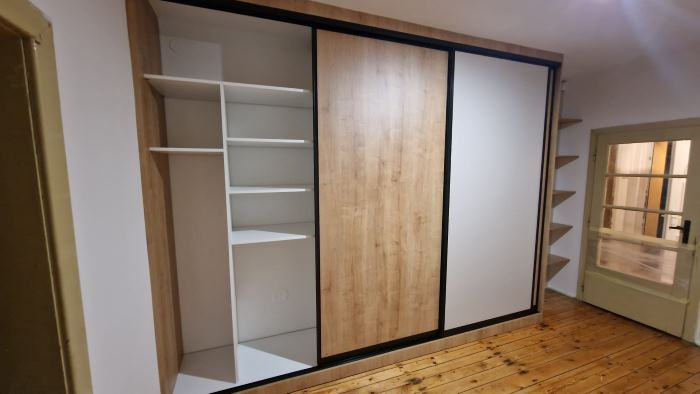

Predstavte si úzku chodbu. Ráno sa v nej dvaja ľudia obliekajú do práce, dieťa hľadá tenisky a pri dverách čaká školská taška. Pri plánovaní novej skrine sa ľahko sústredíte na farbu dvierok a počet políc. Potom však príde prvé ráno s novým nábytkom a zistíte, že otvorené krídlo blokuje prechod. Alebo že pri posuvných dverách nikdy nevidíte celý obsah skrine naraz.
Práve preto sa oplatí rozhodnúť o type otvárania skôr, než začnete vyberať dekor. Posuvné a krídlové dvere majú svoje silné stránky, no ani jedno riešenie nie je univerzálne. Rozhoduje priestor pred skriňou, šírka otvoru, rozloženie vnútra aj to, čo do nej budete každý deň ukladať.
Rýchla odpoveď: kedy zvoliť ktorý typ dverí
Posuvné dvere sú užitočné najmä tam, kde nechcete pri otváraní zasahovať do priestoru pred skriňou. Krídlové dvere spravidla umožňujú lepší prístup k viacerým častiam vnútra súčasne a môžu byť veľmi praktické pri menších moduloch. Nejde o pravidlo bez výnimiek: pri každom projekte treba zohľadniť šírku, výšku, kovanie a umiestnenie ďalšieho nábytku.
V spálni, kde stojí posteľ blízko skrine, často vyhrajú posuvné dvere. V šatníku s dostatočným voľným priestorom môžu byť príjemnejšie krídlové. V chodbe rozhodujú aj vstupné dvere, radiátor, vypínače a smer pohybu ľudí. Najlepšie rozhodnutie často urobíte až po jednoduchom nákrese miestnosti.
Posuvné dvere: výhody a limity
Prečo pomáhajú v užších priestoroch
Posuvné krídla sa pohybujú po koľajniciach pred skriňou alebo v jej konštrukcii. Pri otvorení nepotrebujú priestor, do ktorého by sa klasické dvere vyklopili. To je výhodné pri posteli, komode alebo úzkom prechode. Zároveň vytvárajú veľkú súvislú plochu, ktorá môže pôsobiť pokojne a minimalisticky.
Praktický príklad: v malej spálni stojí posteľ tak, že pred skriňou zostáva iba úzky prechod. Pri krídlových dverách by bolo treba stále ustupovať. Posuvné otváranie situáciu zjednoduší a umožní využívať miesto pohodlnejšie. Je však nutné správne navrhnúť prekrývanie krídel a vnútorné členenie.
Čo vás môže pri posuvných dverách prekvapiť
Pri bežnom posuvnom systéme zostane časť skrine zakrytá jedným krídlom. Ak otvoríte ľavú časť, pravá je čiastočne alebo úplne prekrytá. To nemusí vadiť, ak je vnútro rozdelené logicky; problém však nastáva, keď široká zásuvka koliduje s posuvným krídlom a nejde ju úplne vysunúť.
Posuvný systém si vyžaduje správne osadenie, kvalitné vedenie a pravidelné udržiavanie koľajnice bez nečistôt. Pri ťažších alebo vysokých dverách treba vyberať systém vhodný pre rozmery a hmotnosť výplne. Zrkadlové krídla miestnosť opticky zväčšia, ale tiež na nich bude viac vidieť odtlačky a prach.
Ako plánovať vnútro posuvnej skrine
Najprv si označte, kde sa krídla zastavia pri otvorení. Až potom umiestnite zásuvky, drôtené koše, výsuvné vešiaky a police. Často je rozumné rozdeliť vnútro do zón zodpovedajúcich jednotlivým otvorom. Inak získate skriňu s veľkým objemom, ale s nepraktickým prístupom k veciam, ktoré používate každý deň.
Krídlové dvere: kedy sú pohodlnejšie
Prehľadný prístup do celej skrine
Pri krídlových dverách môžete otvoriť viac častí naraz. To oceníte najmä v šatníku alebo spálni, keď si vyberáte oblečenie a potrebujete vidieť police, zásuvky aj vešiakovú časť. Je tiež jednoduchšie navrhnúť jednotlivé úzke moduly bez toho, aby otváranie jedného dverného krídla zavadzalo vnútornému výsuvu.
Príklad z bežného dňa: pripravujete oblečenie pre dve deti a súčasne hľadáte posteľnú bielizeň. Keď môžete otvoriť dve susedné časti naraz, orientácia býva rýchlejšia. Pri posuvnej skrini by ste podľa rozdelenia museli krídlami viackrát pohybovať.
Na čo si dať pozor pri otváraní
Pred každými dverami musí zostať dostatok voľného miesta. Nie je dôležitá iba vzdialenosť od postele, ale aj to, či pri otvorení nezavadzajú o stropné svietidlo, parapet, radiátor alebo susedné dvere. Pri vysokých krídlach musí návrh počítať s vhodným počtom pántov a s hmotnosťou materiálu.
Krídlové dvere tiež ponúkajú rôzne povrchové úpravy: hladké dosky, frézované dekory alebo zrkadlo. Nie každá úprava je vhodná pre každú veľkosť krídla. Pri vyšších dverách je rozumné opýtať sa na stabilitu materiálu a možnosti prípadného nastavenia pántov.
Porovnanie podľa konkrétnej miestnosti
Malá spálňa s posteľou oproti skrini
Predstavte si miestnosť, kde medzi posteľou a skriňou zostáva približne meter voľného priestoru. Posuvné dvere tu môžu fungovať veľmi dobre, najmä ak sa ľudia pri obliekaní často míňajú. Krídlové riešenie však nie je vylúčené: pri vhodne zvolenej šírke jednotlivých krídel môže byť pohodlné aj ono. Rozhoduje presný pôdorys, nie len názov miestnosti.
Pred objednaním si skúste na podlahe vyznačiť smer a šírku otvárania. Môžete použiť papierovú pásku. Postavte sa na miesto, kde bežne stojíte, a predstavte si, že vyťahujete veľkú zásuvku. Takáto skúška často odhalí problém skôr, než vznikne vo výrobe.
Úzka chodba pri vstupných dverách
V chodbe sa pohybujeme s taškami, kabátmi a niekedy aj s kočíkom. Ak je skriňa oproti vstupu alebo vedľa dverí do izby, posuvné otváranie môže znížiť riziko kolízií. Ale pozor: do chodby často potrebujete uložiť aj topánky, vysávač a sezónne oblečenie. Voľba dverí by mala vychádzať z vnútorného vybavenia, nielen zo šírky prechodu.
Ak potrebujete lavičku a vešiakovú stenu, zvážte kombináciu uzavretej skrine s otvorenou zónou. Niekedy je to užitočnejšie než jedna veľká skriňa cez celú stenu. Podobné riešenia nájdete v službe Chodby a predsiene na mieru.
Samostatný šatník alebo väčšia spálňa
Keď je pred skriňou dosť miesta, krídlové dvere ponúkajú výborný prehľad. Pri vyšších zostavách môžu pôsobiť ako súvislá stena nábytku a umožňujú jednoduché usporiadanie úložných zón. Posuvné dvere však majú zmysel aj tu, napríklad kvôli vzhľadu alebo veľkým zrkadlovým plochám. Rozhodujúce je, aký komfort očakávate pri obliekaní.
Podkrovie a priestor pod šikminou
Pri podkroví môže typ otvárania obmedziť sklon stropu alebo nepravidelná výška. Nábytok na mieru umožňuje prispôsobiť rozmery, ale neznamená to, že každý dverný systém sa hodí do každého kúta. Niekedy je rozumná kombinácia krídlových dverí v nižšej časti a zásuviek či otvorených políc tam, kde by dvere prekážali.
Čo ovplyvňuje cenu vstavanej skrine
Cena závisí od rozmerov, počtu dverí, povrchových úprav, členenia vnútra a kovania. Väčšie zrkadlové výplne, špeciálne profily, tlmenie, osvetlenie a výsuvné doplnky môžu zvýšiť rozpočet. Rovnako môže byť drahšia atypická výroba do výklenku alebo pod šikminu. Nemá preto zmysel tvrdiť, že jeden typ dverí je vždy lacnejší.
Na stránke Interiéroví majstri sa pri vstavaných skriniach uvádza orientačná cena od 990 €. Konečná cena sa pripravuje podľa konkrétneho návrhu. Ak chcete rozpočty porovnať, pýtajte si rovnaké rozmery, rovnaký vnútorný obsah a presne určené povrchové materiály. Inak môže lacnejšia ponuka skrývať menší počet zásuviek alebo jednoduchšie kovanie.
Tri otázky, ktoré sa oplatí položiť pri cenovej ponuke
- Ktoré časti skrine budú pri otvorení dverí skutočne prístupné?
- Aké kovanie je navrhnuté a pre aké rozmery či zaťaženie?
- Čo presne zahŕňa cena: zameranie, výrobu, dopravu, montáž a doplnky?
Vnútorné usporiadanie je dôležitejšie než počet políc
Skôr než začnete kresliť priečky, spíšte si, čo budete skladovať. Koľko miesta potrebuje dlhé oblečenie? Kde budú cestovné kufre? Kam uložíte vysávač a žehliacu dosku? A čo veci, ktoré používate iba raz za sezónu? Mnohé skrine vyzerajú na vizualizácii dokonale, ale pri bežnom používaní zistíte, že polovica políc nemá správnu výšku.
Pri dvojici sa často osvedčí rozdeliť skriňu na osobné zóny a spoločné odkladacie miesto. Pri detskej izbe rátajte s tým, že potreby sa budú meniť. Nastaviteľné police pomáhajú prispôsobiť úložný priestor bez zásahu do korpusu. V chodbe má zmysel vyhradiť oddelenú časť na mokré bundy a špinavú obuv, ak to materiály a vetranie umožnia.
Nezabudnite na osvetlenie a zásuvky
V hlbokom šatníku sa môže hodiť integrované osvetlenie. Riešiť ho však treba už pri plánovaní elektroinštalácie, aby káble neprekážali zásuvkám a otváraniu. Ak svetlo nie je potrebné, nemusíte ho do návrhu pridávať len preto, že vyzerá pekne. Kvalitná skriňa je tá, v ktorej sa dobre orientujete aj za bežného svetla.
Príklad z realizácie: vstavané skrine v Sládkovičove
V portfóliu Interiérových majstrov je predstavená realizácia vstavaných skríň do troch miestností v Sládkovičove: spálne, hosťovskej izby a vstupnej chodby. Doba dodania bola štyri týždne. Je to dobrá ukážka toho, že úložné priestory v jednotlivých miestnostiach majú odlišnú funkciu, preto nemusia mať rovnaké vnútorné členenie. Pozrite si realizáciu v Sládkovičove.
V tejto realizácii sú použité posuvné dvere. Pri vašej skrini však bude rozhodovať pôdorys vašej domácnosti, nie jedna univerzálna odpoveď.
Časté otázky o dverách na vstavanú skriňu
Sú posuvné dvere vhodné do každej malej spálne?
Nie vždy. Treba overiť šírku skrine, prekrývanie krídel a prístup k zásuvkám. V niektorých malých priestoroch fungujú lepšie užšie krídlové dvere alebo kombinácia viacerých typov úložiska.
Dajú sa krídlové dvere používať v úzkej chodbe?
Áno, pokiaľ zostane dostatok miesta na ich bezpečné otvorenie. Skontrolujte aj kolízie s dverami do izieb a s nábytkom oproti skrini.
Je zrkadlo na posuvných dverách praktické?
Môže opticky presvetliť miestnosť a nahradiť samostatné zrkadlo. Treba však počítať s častejším čistením a vybrať konštrukciu vhodnú pre konkrétnu výplň.
Ktoré dvere vydržia dlhšie?
Nedá sa to určiť iba podľa typu otvárania. Životnosť závisí od kvality kovania, správnej montáže, hmotnosti krídel a používania. Pri oboch riešeniach je dôležité dobré nastavenie a možnosť servisu.
Môžem kombinovať oba typy dverí?
Áno. Pri väčšej zostave sa niekedy oplatí skombinovať posuvnú časť, klasické dvierka a otvorenú zónu. Takéto riešenie však musí dávať zmysel vzhľadom na pohyb a prístup k uloženým veciam.
Navrhnime skriňu podľa vášho priestoru
Ak si nie ste istí, či zvoliť posuvné alebo krídlové dvere, pošlite náčrt miestnosti a fotografiu steny, kde má stáť skriňa. Interiéroví majstri riešia vstavané skrine a šatníky na mieru v Bratislave a okolí; prvá konzultácia je bezplatná. Prečítajte si viac o službe Vstavané skrine a šatníky alebo pošlite nezáväznú požiadavku.
Súvisiace čítanie: Koľko stojí kuchyňa na mieru? a Ako využiť roh v kuchyni